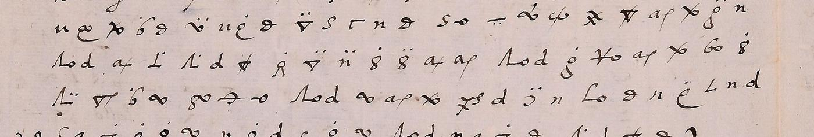
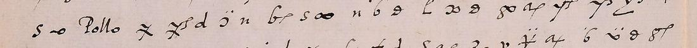

At a glanceExternal key matched · partial (93% of the cipher)
- The letters
- Charles V to Ferrante Gonzaga, governor of Milan, signed Carlos and countersigned Vargas. The main one is dated Brussels, 14 November 1549, with about 110 lines of signs. Four shorter passages come from 13 May, 30 September, 20 November and 23 December 1549.
- Where
- Biblioteca Estense Universitaria, Modena, Autografoteca Campori, Lettera K, Karl V, sfasc. IV cc. 60-63 and siblings. Not on DECODE.
- The cipher
- The Imperial Cipher of 1544–1554: the shape of a sign gives the consonant and a mark gives the vowel. Clear words stand in the text as code words.
- How it was deciphered
- With the key as reconstructed by Bertomeu Masiá and pictured by Tomokiyo, extended by hand from the text. The 14 November letter has no decipherment; three others were aligned with theirs. All by eye, with the sense in view.
- What it says
- Making terms with Ottavio would bring little and could mean war with the Church. “Nunca havemos querido emprender” anything there by way of war. Gonzaga may act only in two named cases, and then with dissimulation.
- Still open
- Several code words; a few stretches of c. 60v and c. 61r; the last two lines of c. 64r. No person has checked a passage against the image.
01 The letters
The Estense holds 151 letters from Charles V to Ferrante Gonzaga, most in clear. Nine were flagged as partly in cipher. Five use the sign cipher treated here, and each of those carries its cipher as passages inside a clear letter, except that the 14 November letter is almost solid cipher from the middle of c. 60r to the top of c. 62r. It ends “Dat. en Bruselas a xiiij de Noviembre M.D.xlviiij”, with the signatures of Carlos and Vargas on c. 62v.
The numeric letters of 15 July 1549 and 11 August 1542 and the letter of 1 July 1552 use other ciphers, so they are not part of this page.

02 What the Emperor says
Ottavio Farnese had been trying to recover Parma from his grandfather the Pope, and Gonzaga had reported a chance to make terms with him. Charles answers in cipher. The whole text is under Full texts below; these are the parts that run.
Ottavio is a poor foundation. He has no money, being “en desgracia del Pollo”, and nowhere to draw troops from except the lands of the Church. To carry the matter forward Gonzaga would have to declare himself, which would be “romper la guerra contra la yglesia”, since “Su Santidad” holds Parma in the Church’s name, not the Farnese house’s.
The policy. “En Parma y en Plazencia nunca havemos querido emprender hasta qui ninguna cosa por via de guerra avierta.” If terms were made and the Pollo died, “se vernia luego a las manos”, and Charles would find himself “embaraçado y cargado por ambas partes”.
The fear. Terms might give the Pollo an excuse “passar adelante mas desvergonçadamente en dar Parma a Horacio”, making “una frontera” against the Emperor.
The order. “No deveys en ninguna manera entrar por el presente en capitulacion con el dicho Ottavio.” Two exceptions follow. If Camillo Orsini tries a stroke “en sede vacante o en vida del Pollo”, Gonzaga may do what seems best, provided it is justified and has a safe way out. If Orazio or someone else enters Parma, for instance by an agreement between the Pollo and “el rey de nerp”, Gonzaga is to find a way to make himself master of the city, “con la desteridad y dissymulacion” that Charles trusts him to use. Otherwise, while “Parma [is] en manos del Pollo”, nothing is to be undertaken against it.

The Pollo is very probably the Pope. The letter never says so. But c. 60v has “teniendo Su Santidad como agora tiene a Parma” where c. 62r has “estando Parma en manos del Pollo”, and c. 61v speaks of “sede vacante o en vida del Pollo”. Paul III died on 10 November 1549, and the letter of 14 November was clearly written before the news came. By 20 November the Emperor writes in clear of “este tiempo de Sede vacante”.
03 The other passages
- 20 November 1549 (cc. 64r–64v): five short passages, written after the news. “En ninguna manera se mueva ninguna cosa en Parma”, no war on the Church, and no attack on the Farnese state at such a time. The clerk’s margin notes give the same sense, and they were in view. The last two lines of c. 64r are not deciphered.
- 30 September 1549 (c. 50r): someone goes “con fin de tractar al prior de lombardia”, castellan of the castle, so as to throw him out and put in Mons. de Brissac. A clear margin note summarises it, and it was also in view.
- 13 May 1549 (c. 30r): where to find money and materials for a work, with no show of the intention. Slip c. 29 is the decipherment of the time.
- 23 December 1549 (c. 76r): on Nice and the Prior of Lombardy, sent to live in the castle. c. 77 is the decipherment of the time.
04 Method
The slip on c. 29 gave the first values. Tomokiyo’s Cryptiana then identified the system and pictures Bertomeu Masiá’s reconstruction of the key, which shows the rule: base shape for the consonant, mark for the vowel. The key image is small and does not cover every form, so the sign table was extended from the letters themselves.
The cipher was cropped into numbered panels at about seven times size, and each sign was named and given a value in a sign file, line by line. The main session did c. 60r block 1 and c. 60v. Subagents with the same brief did c. 60r block 2, c. 61r, c. 61v, c. 62r and the short passages. In all there are 3,032 signs: 2,780 with a value, 128 doubtful, 51 taken as nulls, 25 clear words and 48 unread.
The text is continuous across the pages, which is one check on it: c. 60r ends “romper la guerra contra la yglesia o” and c. 60v goes on “no seria … que romper la guerra con la yglesia”; c. 60v ends “lo qual no con” and c. 61r begins “vergia”.
The statistical test (docs/_validate.py, order-4 model of Golden Age Spanish) passes. The reading scores −1.96 per letter, against −3.99 for random keys (9.5 sd) and −2.56 for keys annealed onto shuffled signs (45.5 sd), and an annealer on the real text reaches only −2.34.
05 What remains uncertain
- Not a controlled test. Every value was chosen with the sentence in view, knowing what would make Spanish. The statistical test speaks for the key as a whole, not for any one word. Only one line of the subagents’ work (c. 61v line 15) was checked against its crop, and no person has checked any.
- Code words.
Pollois inferred to be the Pope.musormmsfits “para” everywhere.intaandemstand where the Church is expected, andnerpwhere France is, both from the sense only.vela/bela,gien,et udandtuare unexplained. - Stretches that do not form sentences. c. 60v lines 7–8 and 23–27; c. 61r lines 4–5 and 16–18; c. 61v line 18 (“la pe gu l ro n”).
- Doubtful spellings left as the signs give them. “Hallarse” after “verniamos”; “arrordio” for acordio; “su rr esso” for suceso. Gamma is rr in the key but wants c here. “Plazencia” rests on an N-shaped sign taken as p from the words it occurs in.
- Signs with dots below. Most drop out inside a word (“car.gado”, “quisie.sse”), but some carry their plain value (c. 60r line 12), and the end of c. 64r gives no Spanish either way.
- People. The signs give Ursino and Horacio. Taking them as Camillo Orsini and Orazio Farnese is from general knowledge. “Dragut” for “Drigui” on c. 62r is a guess.
- Prior work. Bertomeu Masiá’s La guerra secreta de Carlos V contra el Papa (2009) studies this very affair and its ciphers, in Granvelle’s correspondence. It could not be read online, so these letters may already be in print there. A web search found no printed text of the 14 November letter, but the search was not exhaustive.
Full texts
The transcription and the decryption of every document on this page, so that the reading can be used and checked. Short files are shown here; all are in the repository.
14 Nov 1549, cc.60r-62r read in part
Charles V tells his governor of Milan not to make terms with Ottavio Farnese over Parma: Ottavio has no money or troops, and it would mean war with the Church, which holds Parma, and could drive the Pope to give it to Orazio Farnese. Gonzaga may act only in two cases, an Orsini stroke or Orazio's entry, and then with dissimulation.
Builds coherent sentences, but under the read bar of 95% of words read as sense (94% here); the holes are marked in the reading.
Transcription
# 14 Nov 1549, c.60r, first cipher block, by eye, no slip or margin note. line TAB sign-name TAB value. ? = unread, trailing ? = value doubtful. 1 loopg y 1 ys-2dots vi 1 j-2dots ni 1 S e 1 ap n 2 oo do 2 n a 2 dash-o l 2 Lambda-1dot pa 2 d r 2 tri-2dots ti 2 8f cu 2 six-1dot la 2 d r 2 xo de 2 six-1dot la 2 xo de 2 star te 2 d r 2 L-dots mi 2 j-1dot na 2 eight-2dots ci 2 aplus o 2 ap n 2 eight-o co 2 ap n 2 cslash que 3 cslash-dot que 3 v-1dot da 3 ys-1dot va 3 xo de 3 theta s 3 xo de 3 aplus-dots-below null? 3 n a 3 Lambda-p pu 3 ap n 3 tri-1dot ta 3 d r 3 loopg y 3 eight-1dot ca 3 Lambda-2dots pi 3 tri-p tu 3 six-1dot la 3 d r 3 eight-o co 3 theta-bar ne 3 dash-o l 4 Saa [Duque] 4 aplus o 4 plus tt 4 n a 4 ys-2dots vi 4 aplus o 4 yo so 4 m b 4 g-bar re 4 six-1dot la 4 S e 4 a m 4 star-x pre 4 y-1dot sa 4 xo de 4 Lambda-1dot pa 4 d r 4 L-dot ma 4 y-bar se 4 tri-o to 4 eight-1dot ca? 5 g-1dot ra 5 ap n 5 n a 5 cw-2dots qui 5 n a 5 dash-o l 5 op gu 5 j-1dot na 5 theta s 5 xo de 5 six-1dot la 5 theta s 5 eight-o co 5 ap n 5 y-2dots si 5 xo de 5 g-1dot ra 5 eight-2dots ci 5 aplus o 5 theta-bar ne 5 theta s 5 cslash que 5 y-o so 6 m b 6 f-bar re 6 L ll 6 aplus o 6 x-inf no 6 theta s 6 aplus o 6 Y-L c? 6 nine u 6 Gamma rr 6 S e 6 ap n 6 Lambda-1dot pa 6 g-1dot ra 6 xo de 6 theta s 6 Lambda-p pu 6 S e 6 theta s 6 ap-dots-below null? 6 n a 6 y-1dot sa? 6 clear ho 7 v-1dot da 7 d r 7 aplus o 7 theta s 7 n a 7 S e 7 ap n 7 star te 7 ap n 7 xo de 7 d r 7 x-p nu 7 S e 7 theta s 7 L-1dot tra 7 ring-stem i 7 ap n 7 star te 7 ap n 7 eight-2dots ci 7 aplus o 7 ap n 8 loopg y 8 ys-o vo 8 six-p lu 8 ap n 8 tri-1dot ta 8 v d
Transcription
# 14 Nov 1549, c.60r second cipher block, by eye with sign_table.tsv, context in view. line TAB sign-name TAB value. ? = unread, trailing ? = value doubtful. 1 tri-cross te 1 openj-2dots ni 1 S e 1 ap n 1 sideloop do 1 g-bar re 1 theta s 1 Lambda-bar pe 1 tri-o to 1 n a 1 dash-o l 1 Lambda-o po 1 eight-o co 1 n-p fu 1 ap n 1 x-curl-1dot da 1 L-bar me 1 ap n 1 tri-o to 1 cslash que 1 seven-bar se 2 Lambda-p pu 2 S e 2 x-stroke-o de 2 e-1dot ha 2 crossV-bar ze 2 d r 2 x-stroke-o de 2 six-1dot la 2 Lambda-bar pe 2 d r 2 y-o so 2 j-1dot na 2 x-stroke-o de 2 dash-o l 2 x-curl-2dots di 2 u c 2 e-oo ho 2 x-p-dots-below null? 2 x-curl-1dot-mark du? 2 cslash que 2 aplus o 2 plus tt 2 n a 3 ys-2dots vi 3 aplus o 3 Lambda-2dots pa? 3 g-1dot ra 3 nine u 3 j-1dot na 3 S e 3 a m 3 X-bar pre 3 y-1dot sa 3 eight-o co 3 L-o mo 3 six-1dot la 3 x-stroke-o de 3 Lambda-1dot pa 3 d r 3 L-1dot ma 3 n a 3 dash ss 3 ring-stem i 3 Lambda-o po 3 d r 3 six-o lo 3 cslash que 4 seven-bar se 4 tri-2dots ti 4 S e 4 theta-bar ne 4 eight-o co 4 x-curl no 4 eight-2dots ci 4 sideloop do 4 x-stroke-o de 4 L-tick ll 4 n a 4 loopg y 4 x-curl no 4 tri-cross te 4 theta-bar ne 4 d r 4 n-o-1dot-dots-below null? 4 n-o fo 4 d r 4 L-1dot ma 4 x-stroke-o de 4 e-1dot ha 4 ys-bar ve 4 d r 5 x-curl-2dots di 5 theta-bar ne 5 g-o ro 5 S e 5 theta s 5 tri-1dot ta 5 ap n 5 sideloop do 5 S e 5 ap n 5 x-stroke-o de 5 theta s 5 R-1dot gra 5 eight-2dots ci 5 n a 5 x-stroke-o de 5 dash-o l 5 clear Pollo 5 eight-o co 5 L-o mo 5 Lambda-o po 5 d r 6 cslash que 6 n a 6 nine-bar u 6 ap n 6 cslash que 6 x-curl no 6 six-bar le 6 n-1dot fa 6 dash-o l 6 tri-1dot ta 6 seven-bar se 6 ap-dots-below null? 6 x-curl no 6 six-1dot la 6 tri-2dots ti 6 S e 6 theta-bar ne 6 x-stroke-o de 6 sideloop do 6 ap n 6 x-stroke-o de 6 y-1dot sa 6 eight-1dot ca 6 d r 7 six-1dot la 7 dash-o-slash ge 7 ap n 7 tri-cross te 7 x-curl no 7 e-1dot ha 7 ys-2dots vi 7 S e 7 ap n 7 sideloop do 7 aplus-dots-below null? 7 n a 7 L ll 7 ring-stem i 7 aplus o 7 invT-1dot tra 7 theta s 7 tri-2dots ti 7 S e 7 Gamma rr 7 n a 7 theta s 8 eight-o co 8 ap n 8 ys-bar ve 8 crossV-2dots zi 8 j-1dot na 8 theta s 8 x-stroke-o de 8 sideloop do 8 ap n 8 x-stroke-o de 8 six-1dot la 8 Lambda-p pu 8 S e 8 x-curl-1dot da 8 e-1dot ha 8 ys-bar ve 8 d r 8 y-2dots si 8 x-curl no 8 six-1dot la 8 theta s 9 x-stroke-o de 9 six-1dot la 9 loopg y 9 o-dash g 9 six-bar le 9 y-2dots si 9 n a 9 x-stroke-o de 9 clear et 9 clear ud 9 loopg y 9 clear tu 9 loopg y 9 cslash que 9 x-stroke-o de 9 theta s 9 tri-1dot ta 9 L-loop ma? 9 theta-bar ne 9 g-1dot ra 9 seven-bar se 9 eight r? 9 n a 9 x-stroke-o de 9 theta s 10 n-o fo 10 d r 10 eight-1dot ca 10 infinity do? 10 Lambda-1dot pa 10 g-1dot ra 10 L ll 10 S e 10 ys-1dot va 10 d r 10 six-1dot la 10 eight-o co 10 y-1dot sa 10 n a 10 x-stroke-o de 10 dash-o-dots-below null? 10 n-dots-below null? 10 six-1dot la 10 ap n 10 tri-cross te 10 ring-stem i 10 ap n 10 tri-cross te 10 d r 11 ys-bar ve 11 theta-bar-dots-below null? 11 j-2dots ni 11 d r 11 loopg y 11 x-stroke-o de 11 u c 11 six-1dot la 11 no-letters r 11 n a 11 d r 11 aplus o 11 theta s 11 x-stroke-o de 11 x-p nu 11 S e 11 theta s 11 invT-1dot tra 11 Lambda-1dot pa 11 d r 11 tri-cross te 11 six-o lo 11 cw-1dot qua 11 dash-o l 12 clear & 12 L-o-dots-below null? 12 cslash-dots-below null? 12 g-o ro 12 a m 12 Lambda-bar-dots-below pe 12 d r 12 six-1dot la 12 g-o-dots-below null? 12 S-dots-below null? 12 op gu 12 omega-dots-below e 12 Gamma rr 12 n a 12 eight-o co 12 ap n 12 invT-1dot tra 12 six-1dot la 12 loopg y 12 o-dash-dots-below g 12 six-bar le 12 y-2dots si 12 n a 12 aplus o
Transcription
# 14 Nov 1549, c.60v, by eye with sign_table.tsv, context in view. line TAB sign-name TAB value. ? = unread, trailing ? = value doubtful. 1 x-curl no 1 y-bar se 1 g-2dots ri 1 n a 1 aplus o? 1 L-o mo? 1 cslash que 1 g-o ro 1 a m 1 Lambda-bar pe 1 d r 1 six-1dot la 1 op gu 1 S e 1 Gamma rr 1 n a 1 eight-o co 1 ap n 1 L ? 1 six-1dot la 1 loopg y 1 dash-o g 1 six-rtop le 1 seven-2dots si 1 n a 2 star te 2 j-2dots ni 2 S e 2 ap n 2 sideloop do 2 S-u-dots-below Su 2 y-p ? 2 seven-1dot sa? 2 ap n 2 tri-2dots ti 2 sideloop-1dot da 2 sideloop d 2 eight-o co 2 L-o mo 2 n a 2 ring-inf go 2 g-1dot ra 2 tri-2dots ti 2 S e 2 theta-bar ne 2 n a 2 Lambda-1dot pa 2 d r 2 L-dot ma 3 S e 3 ap n 3 theta-bar-dots-below ? 3 x-curl no 3 a m 3 seven b 3 g-bar re 3 xo de 3 L ll 3 n a 3 loopg y 3 x-curl no 3 xo de 3 six-1dot la 3 eight-1dot ca 3 y-1dot sa 3 n-bar fe 3 d r 3 theta-bar-2dots ne? 3 seven-tail ? 3 loopg ? 3 ring-stem ? 3 seven ? 4 xo de 4 g-1dot ra? 4 ap n 4 sideloop do 4 n a 4 dash ss 4 ring-stem i 4 L-2dots mi 4 theta s 4 L-o mo 4 cslash que 4 seven-2dots bi 4 S e 4 theta s 4 tri-1dot ta 4 S e 4 a m 4 star-x pre 4 y-1dot sa 4 y-bar se 4 e-hook ? 4 cross-1dot ? 4 S e 4 ap n 5 n-1dot fa 5 ys-o vo 5 d r 5 xo de 5 aplus o 5 tt-cross tt 5 n a 5 ys-2dots vi 5 aplus o 5 eight-o co 5 L-o mo 5 S e 5 theta s 5 tri-1dot ta 5 n a 5 six-1dot la 5 g-o ro? 5 cslash que 5 y-bar se 5 e-1dot ha 5 g-1dot ra 5 eight-1dot ca 5 Lambda-2side pi 6 tri-p tu 6 six-1dot la 6 ap n 6 sideloop do 6 eight-o co 6 theta-bar ne 6 dash-o l 6 Lambda-1dot pa 6 g-bar re 6 eight-bar ce 6 g-2dots ri 6 n a 6 cslash que 6 y-bar se 6 cw-2dots qui 6 seven-2dots si 6 S e 6 y-bar-dots-below null? 6 dash ss 6 S e 6 seven-o ? 6 nine-dot do? 6 tri-bar-p te? 6 theta-bar ne 6 d r 7 loopg y 7 n a 7 x-curl no 7 seven-1dot sa? 7 d r 7 ys ? 7 x-stroke-o de? 7 g-bar re 7 u c 7 e-oo ho 7 Lambda-o po 7 d r 7 L-bar me 7 three-o jo 7 d r 7 cslash que 7 S e 7 dash-o l 7 d-top ? 7 a m 7 Lambda-bar pe 7 g-1dot ra? 7 aplus o 7 seven-2dots bi 8 S e 8 ap n 8 sideloop d 8 n a 8 seven-2dots si? 8 cslash que 8 tri-bar te 8 openj-2dots ni 8 S e 8 ap n 8 sideloop-o do 8 x-curl no 8 theta s 8 S e 8 theta-tick s? 8 tri-bar te 8 loopg y 8 g-bar-dots-below null? 8 op gu 8 n a 8 dash-o l 8 L-bar me 8 ap n 8 tri-bar te 9 S e 9 ap n 9 Lambda-side pa 9 d r 9 L-1dot ma 9 loopg y 9 S e 9 ap n 9 N p? 9 six-1dot la 9 seven-bar ze? 9 ap n 9 eight-2dots ci 9 n a 9 x-p nu 9 ap n 9 eight-1dot ca 9 e-1dot ha 9 ys-bar ve 9 L-o mo 9 theta s 9 cslash que 9 g-2dots ri 9 sideloop-o do 10 S e 10 a m 10 X-bar pre 10 ap n 10 x-stroke-o de 10 d r 10 e-1dot ha 10 theta s 10 tri-1dot ta 10 cw-2dots qui 10 openj-2dots ni 10 ap n 10 op gu 10 openj-1dot na 10 eight-o co 10 y-1dot sa 10 Lambda-o po 10 d r 10 ys-2dots vi 10 n a 10 x-stroke-o de 10 g-o-dots-below null? 10 op gu 10 S e 11 gamma-thick rr 11 n a 11 six a 11 ys-2dots-dots-below vi 11 S e 11 d r 11 tri-1dot ta 11 S e 11 theta s 11 tri-1dot ta 11 n a 11 six-1dot la 11 g-oo ro? 11 cslash que 11 y-bar se 11 ys-bar ve 11 d r 11 openj-1dot na 11 n a 11 S e 11 ap n 11 four ? 11 six-1dot la 11 cslash que 11 g-o-marks ? 11 eight-bar-1dot ca 11 d r 12 S e 12 dash-o l 12 x-stroke-o de 12 g-bar re 12 u c 12 e-oo ho 12 cslash que 12 y-bar se 12 X-bar pre 12 tri-2dots ti 12 S e 12 ap n 12 x-stroke-o de 12 x-p nu 12 S e 12 theta s 12 invT-side tra? 12 Lambda-side pa 12 d r 12 tri-bar te 12 n a 12 L-tick ll? 12 S e 12 ap n 12 x-stroke-o de 13 cslash que 13 eight-1dot ca 13 Lambda-2side pi 13 tri-p tu 13 six-1dot la 13 ap n 13 sideloop do 13 y-bar se 13 eight-o co 13 theta-bar ne 13 dash-o l 13 x-o-2dots di 13 u c 13 e-oo ho 13 aplus o 13 tt-cross tt 13 n a 13 ys-2dots vi 13 aplus o 13 loopg y 13 L-p mu 13 g-2dots ri 13 S e 13 ap n 13 sideloop do 14 S e 14 dash-o l 14 clear Pollo 14 y-bar se 14 ys-bar ve? 14 d r 14 openj-2dots ni 14 n a 14 six-p lu 14 S e 14 ring-inf go 14 n a 14 six-1dot la 14 theta-tick s? 14 L-1dot ma 14 x-curl no 14 theta s 14 eight-oo co 14 ap n 14 ys-o vo 14 ys ? 14 y-bar se 14 S e 14 dash ss 14 aplus o 14 d r 15 seven-2dots si 15 ap n 15 Lambda-o po 15 x-stroke-o de 15 d r 15 S e 15 q-bar s? 15 eight-p cu 15 y-1dot sa 15 d r 15 x-stroke-o de 15 L-bar me 15 tri-bar te 15 d r 15 S e 15 ap n 15 three-loop ? 15 loopg y 15 tt-cross-1dot ? 15 aplus o 15 six-1dot la 15 x-curl-2dots di 15 theta-tick s 15 eight-p cu 16 dash ss 16 ring-stem i 16 aplus o 16 ap n 16 x-stroke-o de 16 dash-o l 16 x-stroke-o de 16 g-bar re 16 u c 16 e-oo ho 16 X-bar pre 16 tri-bar te 16 ap n 16 x-curl-2dots di 16 sideloop do 16 Lambda-o po 16 d r 16 six-1dot la 16 theta-tick s 16 Lambda-1dot pa 16 d r 16 tri-bar te 16 theta-tick s 16 loopg-bar y? 17 ys-bar ve 17 openj-2dots ni 17 S e 17 ap n 17 sideloop do 17 y-bar se 17 n a 17 dash-o l 17 long-s-dots-below null? 17 n-2dots fi 17 ap n 17 n a 17 L-side ? 17 tri-1dot ta 17 d r 17 x-stroke-o de 17 x-curl-1dot da 17 d r 17 g-bar re 17 eight-oo co 17 a m 17 Lambda-bar pe 17 ap n 17 y-1dot-bar sa 18 n a 18 six-1dot la 18 loopg y 18 o-dash g 18 six-bar le 18 seven-2dots si 18 n a 18 S e 18 ap n 18 eight-1dot ca 18 y-o so 18 cslash que 18 y-bar se 18 e-1dot ha 18 L-tick ll 18 n a 18 dash ss 18 S e 18 y-bar se 18 a-top ? 18 ys ? 18 omega-dot ? 18 S e 18 dash-o l 18 x-stroke-o de 18 g-bar re 19 u c 19 e-oo ho 19 x-stroke-o de 19 six-1dot la 19 theta-tick s 19 x-curl-2dots di 19 u c 19 e-1dot ha 19 theta-tick s 19 tri-2dots ti 19 S e 19 gamma-thick rr 19 n a 19 theta-tick s 19 S e 19 dash-o l 19 dash-dots-below ? 19 sideloop-1dot du? 19 cslash que 19 X-bar pre 19 tri-bar te 19 ap n 19 x-stroke-o de 19 g-2dots ri 19 n a 20 Lambda-o po 20 d r 20 aplus o 20 L-side tra? 20 Lambda-side pa 20 d r 20 tri-bar te 20 R-1dot ra 20 tri-2dots ti 20 n-2dots fi 20 eight-1dot ca 20 eight-2dots ci 20 aplus o 20 ap n 20 Lambda-o po 20 d r 20 g-1dot ra 20 crossV-o zo 20 ap n 20 x-stroke-o de 20 six-o lo 20 eight-1dot ca 21 Lambda-2side pi 21 tri-p tu 21 six-1dot la 21 sideloop do 21 eight-o co 21 theta-bar ne 21 dash-o l 21 Lambda-o po 21 d r 21 sideloop do 21 ap n 21 x-stroke-o de 21 ys-bar ve 21 d r 21 openj-2dots ni 21 n a 21 L-o mo 21 theta-tick s 21 n a 21 e-2dots ha? 21 L-tick ll 21 n a 21 d r 22 theta-tick s 22 S e 22 a m 22 seven-1dot ba 22 g-1dot ra 22 eight-1dot ca 22 sideloop do 22 loopg y 22 eight-long-1dot ca? 22 d r 22 g-o-dots-side null? 22 ring-1dot ga 22 sideloop do 22 Lambda-o po 22 d r 22 n a 22 a m 22 seven-1dot ba 22 theta-tick s 22 Lambda-side pa 22 d r 22 tri-bar te 22 theta-tick s 22 crescent ? 23 loopg y 23 Lambda-o po 23 d r 23 cslash que 23 n-2dots fi 23 openj-1dot na 23 dash-o l 23 L-bar me 23 ap n 23 tri-bar te 23 x-stroke-o de 23 L-1dot ma? 23 theta s 23 x-stroke-o de 23 six-o lo 23 cslash que 23 n a 23 gamma-thick rr 23 d-o ? 23 j-1dot ? 23 y-bar se 23 eight-oo co 23 ap n 23 seven-2dots si 24 x-stroke-o de 24 g-1dot ra 24 x-stroke-o de 24 dash-o l 24 Lambda-o po 24 eight-oo co 24 n-p fu 24 ap n 24 x-stroke-o de 24 L-bar me 24 ap n 24 tri-o to 24 c-G que? 24 y-bar se 24 Lambda-p pu 24 S e 24 x-stroke-o de 24 g-1dot ra? 24 V-bar pe? 24 d r 24 x-stroke-o de 24 dash-o l 25 x-curl-2dots di 25 u c 25 e-oo ho 25 sideloop-1dot du? 25 cslash que 25 aplus o 25 tt-cross tt 25 n a 25 ys-2dots vi 25 aplus o 25 S e 25 theta s 25 x-stroke-o de 25 u c 25 ring-bar ? 25 S e 25 d r 25 cslash que 25 Lambda-o po 25 d r 25 Lambda-o-dark ? 25 e-1dot ha 25 d-o ? 25 a m 25 Lambda-o po 26 seven-2dots ? 26 seven ? 26 six-1dot la 26 x-curl-1dot da 26 x-curl d? 26 y-bar se 26 e-1dot ha 26 ys-dots-below null? 26 nine u 26 g-1dot ra 26 x-stroke-o de 26 ys-1dot-dots-below null? 26 ys-bar ve 26 openj-2dots ni 26 d r 26 n a 26 eight-oo co 26 ap n 26 g-o-bar ce? 26 d r 26 tri-bar te? 26 d r 26 six a 26 dash-o l 27 eight-1dot ca 27 o-seven ? 27 eight-oo co 27 ap n 27 ys ? 27 n a 27 hook-big ? 27 S e 27 six-o lo 27 seven-2dots bi 27 S e 27 ap n 27 x-p nu 27 S e 27 theta s 27 L-o tro? 27 x-curl no 27 ap n 27 seven b 27 g-bar re 27 x-stroke-o de 27 y-bar se 28 tri-o to 28 L-foot ? 28 dash ss 28 S e 28 six-1dot la 28 S e 28 ap n 28 loopg-dots null? 28 X-bar ? 28 seven-1dot ba? 28 six a 28 six-1dot la 28 x-stroke-o de 28 theta s 28 eight-p cu 28 seven-2dots bi 28 S e 28 d r 28 tri-1dot ta 28 six-o lo 28 cw-1dot qua 28 dash-o l 28 x-curl no 28 eight-oo co 28 ap n
Transcription
# 14 Nov 1549, c.61r, by eye with sign_table.tsv, context in view. line TAB sign-name TAB value. ? = unread, trailing ? = value doubtful. 1 ys-bar ve 1 d r 1 ring-2dots gi 1 n a 1 Lambda-o po 1 d r 1 six-o lo 1 theta s 1 g-bar re 1 theta s 1 Lambda-bar pe 1 tri-o to 1 theta s 1 cslash que 1 y-2dots si 1 S e 1 a m 1 L-dots-below null? 1 X-bar pre 1 y-bar se 1 e-1dot ha 1 ap n 1 n a 2 Lambda-p pu 2 ap n 2 tri-1dot ta 2 inf-closed do? 2 x-curl no 2 ys-bar ve 2 S e 2 L-o mo 2 theta s 2 cslash que 2 y-bar se 2 n a 2 eight-o co 2 ap n 2 ys-bar ve 2 openj-1dot ni? 2 S e 2 ap n 2 tri-bar te 2 S e 2 ap n 2 invT-1dot tra 2 d r 3 Lambda-o po 3 d r 3 n a 3 ring-inf go 3 g-1dot ra 3 S e 3 ap n 3 eight-1dot ca 3 Lambda-2side pi 3 tri-p tu 3 six-1dot la 3 eight-2dots ci 3 aplus o 3 ap n 3 eight-o co 3 theta-bar ne 3 dash-o l 3 n a 3 dash ss 3 loopg y 3 Lambda-o po 3 no-letters r 3 S e 3 dash-o l 4 Lambda-o po 4 eight-o co 4 e-hook-o-p fru? 4 tri-o to 4 cslash que 4 x-stroke-o de 4 L-tick ll 4 aplus o 4 y-bar se 4 y-1dot sa 4 eight-1dot ca 4 g-2dots ri 4 n a 4 eight-o co 4 L-o mo 4 Lambda-o po 4 d r 4 six-1dot la 4 a-dots-below ? 4 c-hook-dots-below ? 4 aplus o 4 Gamma rr? 4 six a 5 y-2dots si 5 aplus o 5 ap n 5 cslash que 5 x-stroke-o de 5 L-dots-below null? 5 L-tick ll 5 aplus o 5 Lambda-o po 5 sideloop-bare d 5 g-2dots ri 5 n a 5 tri-o to 5 L-1dot ma 5 d r 5 S e 5 dash-o l 5 clear Pollo 5 clear mus 6 Lambda-1dot pa 6 dash ss 6 six a 6 d r 6 n a 6 x-stroke-o de 6 six-1dot la 6 ap n 6 tri-bar te 6 L-1dot ma 6 theta s 6 x-stroke-o de 6 theta s 6 ys-bar ve 6 d r 6 ring-inf go 6 ap n 6 eight-1dot ca 6 x-curl-1dot da 6 L-bar me 6 ap n 6 tri-bar te 7 S e 7 ap n 7 sideloop-bare-1dot da 7 d r 7 Lambda-1dot pa 7 d r 7 L-1dot ma 7 n a 7 e-oo ho 7 g-1dot ra 7 eight-2dots ci 7 aplus o 7 eight-o co 7 L-o mo 7 x-stroke-o de 7 y-bar se 7 theta s 7 Lambda-bar pe 7 g-1dot ra 7 sideloop do 7 loopg y 7 L-bar me 7 stem-v-dots-below null? 8 tri-bar te 8 d r 8 six-bar le 8 x-stroke-o de 8 ap n 8 invT-o tro 8 S e 8 ap n 8 x-curl no 8 ap n 8 seven b 8 g-bar re 8 x-stroke-o de 8 clear em 8 clear mus 8 e-1dot ha 8 crossV-bar ze 8 d r 8 x-curl no 8 theta s 8 six a 8 L ll 8 ring-stem i 9 nine u 9 openj-1dot na 9 e-oo fro? 9 ap n 9 tri-bar te 9 g-1dot ra 9 eight-o co 9 L-o mo 9 y-2dots si 9 S e 9 a m 9 X-bar pre 9 y-bar se 9 e-2dots ha? 9 y-o so 9 theta s 9 Lambda-bar pe 9 u c 9 e-1dot ha 9 sideloop do 9 loopg y 9 S e 9 L-tick ll 9 aplus o 9 theta s 10 e-1dot ha 10 ap n 10 sideloop-bare-2dots di 10 u c 10 e-oo ho 10 S e 10 ap n 10 clear vela 10 n a 10 dash-o l 10 op gu 10 openj-1dot na 10 theta s 10 ys-1dot-dots-below null? 10 ys-bar ve 10 crossV-bar ze 10 theta s 10 x-stroke-o de 10 L-1dot ma 10 theta s 10 x-stroke-o de 10 dash-o l 11 sideloop-bare-1dot da 11 y-over-L-bar ñ? 11 aplus o 11 cslash que 11 e-1dot ha 11 g-2dots ri 11 n a 11 S e 11 dash-o l 11 sideloop-bare-2dots di 11 u c 11 e-oo ho 11 sideloop-tall-mark du 11 cslash que 11 aplus o 11 tt-cross tt 11 n a 11 ys-2dots vi 11 aplus o 11 n-2dots fi 11 op gu 11 g-1dot ra? 11 ap n 12 sideloop do 12 y-bar se 12 six-bar le 12 cslash que 12 S e 12 ap n 12 n-2dots fi 12 ap n 12 x-curl no 12 e-1dot ha 12 ys-2dots vi 12 six a 12 L-o mo 12 theta s 12 x-stroke-o de 12 n-1dot fa 12 dash-o l 12 tri-1dot ta 12 d r 12 six a 12 openj-p nu 12 S e 12 theta s 13 invT-o tro 13 theta s 13 openj-2dots ni 13 S e 13 tri-o to 13 theta s 13 n a 13 six-o lo 13 L-bar me 13 x-curl no 13 theta s 13 x-stroke-o de 13 theta s 13 Lambda-p pu 13 S e 13 theta s 13 x-stroke-o de 13 ys-bar ve 13 theta s 13 sideloop-bare-2dots di 13 n a 13 theta s 13 crescent ) 14 Lambda-o po 14 d r 14 six-o lo 14 cw-1dot qua 14 dash-o l 14 tri-o to 14 sideloop do 14 x-stroke-o de 14 theta s 14 Lambda-p pu 14 S e 14 theta s 14 x-stroke-o de 14 e-1dot ha 14 ys-bar ve 14 d r 14 six-o lo 14 seven-2dots bi 14 S e 14 ap n 14 S e 14 q-bar s 14 n a 15 L-2dots mi 15 openj-1dot na 15 sideloop do 15 x-curl no 15 invT-1dot tra 15 tri-1dot ta 15 ap n 15 inf-closed do? 15 x-stroke-o de 15 dash-o l 15 n a 15 eight-o co 15 d r 15 sideloop-bare-2dots di 15 aplus o 15 x-stroke-o de 15 dash-o l 15 Lambda-1dot pa 15 d r 15 tri-2dots ti 15 eight-p cu 15 six-1dot la 15 d r 16 x-stroke-o de 16 S e 16 ap n 16 invT-bar tre 16 ap-dots-below null? 16 ys-o vo 16 theta s 16 loopg y 16 aplus o 16 tt-cross tt 16 six a 16 ys-2dots vi 16 aplus o 16 S e 16 dash-o l 16 cw-1dot qua 16 dash-o l 16 eight-2dots ci 16 S e 16 d r 16 tri ta? 16 L-bar me 16 ap n 17 tri-bar te 17 omega e 17 ap n 17 inf-dots-below do? 17 sideloop-bare d? 17 y-bar se 17 Lambda-p pu 17 S e 17 sideloop-bare-1dot da 17 e-1dot ha 17 crossV-bar ze 17 d r 17 eight-o co 17 ap n 17 clear gien 17 y-1dot sa 17 tri-2dots ti 17 theta s 17 cross-t ff 17 n a 17 eight-2dots ci 18 aplus o 18 ap n 18 x-curl no 18 Lambda-o po 18 x-stroke-o de 18 L-o mo 18 theta s 18 x-stroke-o de 18 h-form a? 18 d r 18 x-stroke-o de 18 six a? 18 Lambda-o po? 18 X-o pro 18 seven-1dot ba 18 d r 18 six-bar le 18 x-curl no 18 theta s 18 e-1dot ha 18 Lambda-1dot pa 19 g-bar re 19 eight-2dots ci 19 sideloop do 19 cslash que 19 S e 19 ap n 19 six-o lo 19 x-stroke-o de 19 L-1dot ma 19 theta s 19 x-curl no 19 x-stroke-o de 19 ys-bar ve 19 loopg y 19 theta s 19 S e 19 ap n 19 openj-2dots ni 19 ap n 19 op gu 19 openj-1dot na 19 L-1dot ma 20 theta-bar ne 20 g-1dot ra 20 S e 20 ap n 20 invT-1dot tra 20 d r 20 Lambda-o po 20 d r 20 S e 20 dash-o l 20 X-bar pre 20 y-bar se 20 ap n 20 tri-bar te 20 S e 20 ap n 20 eight-1dot ca 20 Lambda-2side pi 20 tri-p tu 20 six-1dot la 20 eight-2dots ci 20 aplus o 20 ap n 21 eight-o co 21 theta-bar ne 21 dash-o l 21 sideloop-bare-2dots di 21 u c 21 e-oo ho 21 aplus o 21 tt-cross tt 21 n a 21 ys-2dots vi 21 aplus o 21 loopg y 21 six a 21 dash ss 21 loopg y 21 aplus o 21 theta s 21 six-o lo 21 S e 21 n a? 21 eight-1dot ca 21 d r 21 ring-1dot ga 21 L-o mo 21 theta s 22 eight-o co 22 ap n 22 tri-o to 22 sideloop-bare-1dot da 22 S e 22 cross-t ff 22 d r? 22 eight-1dot ca 22 eight-2dots ci 22 n a 22 y-2dots si 22 x-curl no 22 cslash que 22 tri-bar te 22 ap n 22 ring-1dot ga 22 loopg y 22 theta s 22 L-p mu 22 loopg y 22 R-1dot ra? 22 ap n 23 n a 23 sideloop-bare d 23 ys-bar ve 23 d r 23 tri-bar te 23 ap n 23 eight-2dots ci 23 n a 23 x-stroke-o de 23 S e 23 ap n 23 tri-bar te 23 ap n 23 x-stroke-o de 23 d r 23 S e 23 dash-o l 23 y-p su 23 Gamma rr? 23 S e 23 dash ss 23 aplus o 23 cslash que 24 tri-bar te 24 ap n 24 sideloop-bare-1dot da 24 g-1dot ra 24 ap n 24 S e 24 theta s 24 tri-1dot ta 24 theta s 24 sideloop-bare-2dots di 24 cross-t ff 24 S e 24 g-bar re 24 ap n 24 eight-2dots ci 24 six a 24 theta s 24 clear mus 24 n a 24 ys-2dots vi 24 y-1dot sa 24 d r 24 x-curl no 24 theta s 25 x-stroke-o de 25 tri-o to 25 sideloop do 25 loopg y 25 L-2side mi? 25 g-1dot ra 25 d r 25 y-2dots si 25 S e 25 dash-o l 25 sideloop-bare-2dots di 25 u c 25 e-oo ho 25 sideloop-tall-mark du 25 cslash que 25 Lambda-o po 25 d r 25 cw-2dots qui 25 S e 25 d r 26 ys-2dots vi 26 n a 26 tri-bar te 26 d r 26 openj-1dot na 26 aplus o 26 invT-1dot tra 26 L-1dot ma 26 theta s 26 n a 26 N p? 26 Lambda-1dot pa 26 g-bar re 26 ap n 26 tri-bar te 26 n-o fo 26 d r 26 L-1side ma 26 x-stroke-o de 26 six-1dot la 26 cslash que 26 n a 26 dash-o l 27 X-bar pre 27 y-bar se 27 ap n 27 tri-bar te 27 y-bar se 27 ys-bar ve 27 S e 27 clear mus 27 S e 27 ap n 27 invT-1dot tra 27 d r 27 S e 27 ap n 27 Lambda-1dot pa 27 d r 27 six-dots-below null? 27 six-bar-dots-below null? 27 L-1dot ma 27 loopg y 27 eight-o co 27 ap n 28 n-o fo 28 d r 28 L-bar-dots-below null? 28 L-bar me 28 n a 28 S e 28 L-tick ll 28 aplus o 28 loopg y 28 n a 28 six-o lo 28 cslash que 28 y-bar se 28 S e 28 ap n 28 tri-bar te 28 S-dots-below null? 28 ap n 28 x-stroke-o de 28 g-1dot ra 28 x-stroke-o de 28 openj-p nu 28 S e 29 ys-o vo 29 x-stroke-o de 29 clear bela 29 cslash que 29 S-1dot-blotted ca? 29 sideloop-bare-1dot da 29 sideloop-bare-2dots di 29 six a 29 y-bar se 29 S e 29 theta s 29 Lambda-bar pe 29 g-1dot ra 29 L-2side mi? 29 g-1dot ra 29 d r 29 six-o lo 29 cslash que 29 y-bar se 29 Lambda-o po 29 sideloop-bare-1dot da 29 g-1dot ra
Transcription
# 14 Nov 1549, c.61v, by eye with sign_table.tsv, context in view. line TAB sign-name TAB value. ? = unread, trailing ? = value doubtful. 1 loopg y 1 x-stroke-o de 1 seven b 1 g-1dot ra 1 e-1dot ha 1 crossV-bar ze 1 d r 1 seven-bar se 1 op gu 1 ap n 1 six-1dot la 1 aplus o 1 a-o ? 1 Lambda-o po 1 d r 1 tri-p tu 1 openj-2dots ni 1 x-curl-1dot da 1 sideloop d 1 loopg y 1 S e 1 theta s 1 tri-flat ta? 1 sideloop do 1 X-bar pre 2 seven-bar se 2 ap n 2 tri-cross te? 2 x-stroke-o de 2 six-1dot la 2 theta s 2 eight-o co 2 y-1dot sa 2 theta s 2 Lambda-p pu 2 seven b 2 six-2dots li 2 eight-1dot ca 2 theta s 2 loopg y 2 Lambda-1dot pa 2 d r 2 tri-2dots ti 2 eight-p cu 2 six-1dot la 2 g-1dot ra? 2 theta s 2 x-p nu 2 S e 2 theta s 3 invT-side tra 3 theta s 3 slash / 4 Lambda-bar pe 4 g-o ro 4 S e 4 ap n 4 eight-1dot ca 4 y-o so 4 cslash que 4 eight-1dot ca 4 L-2dots mi 4 L-tick ll 4 aplus o 4 nine u 4 d r 4 y-2dots si 4 x-curl no 4 cw-2dots qui 4 y-2dots si 4 S e 4 dash ss 4 S e 4 e-1dot ha 4 crossV-bar ze 4 d r 4 n a 4 dash-o l 5 op gu 5 ap n 5 tri-2dots ti 5 g-o ro 5 S e 5 ap-foot n 5 seven-bar se 5 x-stroke-o de 5 ys-1dot va 5 eight-1dot ca 5 ap n 5 tri-cross te? 5 aplus o 5 S e 5 ap n 5 ys-2dots vi 5 x-curl-1dot da 5 x-stroke-o de 5 dash-o l 5 clear Pollo 5 eight-o co 5 L-o mo 6 six-o lo 6 n a 6 Lambda-p pu 6 ap n 6 tri-1dot ta 6 ys-1dot-dots-below null? 6 loopg y 6 theta s 6 S e 6 ap n 6 six-1dot la 6 X-2dots pri 6 L-bar me 6 g-1dot ra 6 eight-1dot ca 6 d r 6 tri-1dot ta 6 loopg y 6 cslash que 6 S e 6 ys-2dots vi 6 x-stroke-o de 6 ap n 6 tri-cross te? 7 L-bar me 7 ap n 7 tri-cross te? 7 aplus o 7 theta s 7 eight-o co 7 theta-dots-below null? 7 ap n 7 theta s 7 tri-1dot ta 7 g-bar re 7 S e 7 theta s 7 tri-1dot ta 7 d r 7 Lambda-1dot pa 7 d r 7 L-1dot ma 7 n-p fu 7 S e 7 g-1dot ra 7 x-stroke-o de 7 six-1dot la 7 theta s 7 L-1dot ma 7 x-curl no 7 theta s 8 x-stroke-o de 8 clear inta 8 loopg y 8 x-stroke-o de 8 ys ? 8 aplus o 8 seven b 8 S e 8 x-curl-2dots di 8 S e 8 ap n 8 eight-2dots ci 8 n a 8 x-curl no 8 theta s 8 aplus o 8 theta s 8 g-bar re 8 L-2dots mi 8 tt-cross tt 8 ring-stem i 8 L-o mo 8 theta s 8 e-oo ho 8 loopg y 8 theta s 9 S e 9 ap n 9 tri-1dot ta 9 dash-o l 9 eight-1dot ca 9 y-o so 9 six-o lo 9 cslash que 9 L-bar me 9 three-o jo 9 d r 9 aplus o 9 theta s 9 Lambda-1dot pa 9 n-o r 9 S e 9 eight-2dots ci 9 S e 9 d r 9 S e 9 x-curl no 9 sideloop-tall du? 9 seven b 10 x-curl-1dot da 10 ap n 10 sideloop do 10 cslash que 10 L-2dots mi 10 g-1dot ra 10 g-bar re 10 loopg y 10 theta s 10 x-stroke-o de 10 x-curl no 10 S e 10 a m 10 X-bar pre 10 ap n 10 x-stroke-o de 10 d r 10 eight-o co 10 y-1dot sa 10 cslash que 10 x-curl no 10 seven-bar se 10 n a 10 eight-o co 10 L-o mo 11 x-stroke-o de 11 crossV-bar ze 11 theta s 11 L-p mu 11 loopg y 11 three-bar ju? 11 theta s 11 tri-2dots ti 11 n-2dots fi 11 eight-1dot ca 11 x-curl-1dot da 11 loopg y 11 cslash que 11 x-curl no 11 tri-cross te? 11 ap n 11 ring-1dot ga 11 L-p mu 11 loopg y 11 seven-bar se 11 op gu 11 g-o ro 11 loopg-2dots y? 12 n-1dot fa 12 eight-2dots ci 12 dash-o l 12 six-1dot la 12 y-1dot sa 12 six-2dots li 12 x-curl-1dot da 12 Lambda-o po 12 d r 12 S e 12 dash-o l 12 ring-stem i 12 ap n 12 eight-o co 12 ap n 12 ys-bar-dots-below ve 12 openj-2dots ni 12 S e 12 ap n 12 tri-cross te? 12 loopg y 12 x-stroke-o de 12 Gamma rr 12 S e 13 Lambda-p pu 13 tri-1dot ta 13 eight-2dots ci 13 aplus o 13 ap n 13 cslash que 13 seven-bar se 13 Lambda-o po 13 nine d 13 g-2dots ri 13 n a 13 seven-bar-1dot se? 13 op gu 13 ring-stem i 13 d r 13 x-stroke-o de 13 six-o lo 13 eight-o co 13 ap n 13 invT-side tra 13 g-2dots ri 13 aplus o 13 crescent ) 14 loopg y 14 n a 14 dash ss 14 loopg y 14 L-2dots mi 14 theta s 14 L-o mo 14 S e 14 ap n 14 eight-1dot ca 14 y-o so 14 cslash que 14 eight-o-1dot co? 14 L-o mo 14 seven-bar se 14 y-o so 14 theta s 14 Lambda-bar pe 14 u c 14 e-1dot ha 14 Lambda-o po 14 d r 14 n a 15 Gamma rr? 15 aplus o 15 d r 15 x-curl-2dots di 15 aplus o 15 x-stroke-o de 15 S e 15 ap n 15 T-bar-dots-below null? 15 invT-bar tre 15 S e 15 dash-o l 15 clear Pollo 15 loopg y 15 S e 15 dash-o l 15 g-bar re 15 loopg y 15 x-stroke-o de 15 clear nerp 15 aplus o 15 x-stroke-o de 15 aplus o 15 invT-side tra 16 L-1dot ma 16 theta-bar ne 16 g-1dot ra 16 e-oo ho 16 g-1dot ra 16 eight-2dots ci 16 aplus o 16 S e 16 ap n 16 invT-side tra 16 dash ss 16 S e 16 S e 16 ap n 16 Lambda-1dot pa 16 d r 16 L-1dot ma 16 aplus o 16 aplus o 16 invT-side tra 16 Lambda-bar pe 16 d r 16 y-o so 17 openj-1dot na 17 S e 17 ap n 17 x-curl no 17 a m 17 seven b 17 g-bar re 17 x-stroke-o de 17 aplus o 17 invT-o tro 17 cslash que 17 x-curl no 17 n-p fu 17 S e 17 dash ss 17 S e 17 clear inta 17 aplus o 17 S e 17 dash-o l 17 sideloop-tall-1dot du? 17 cslash que 17 aplus o 17 tt-cross tt 17 n a 18 ys-2dots vi 18 aplus o 18 g-o co? 18 ap n 18 cw-2dots qui 18 S e 18 ap n 18 S e 18 theta s 18 tri-1dot ta 18 six-dots-below null? 18 e-bar he 18 u c 18 e-1dot ha 18 six-1dot la 18 Lambda-bar pe 18 op gu 18 six l? 18 g-o-dots-below ro? 18 ap-dots-below n? 18 eight-o co 18 ap n 18 eight-o co 19 six-o lo 19 d r 19 x-stroke-o de 19 x-curl no 19 e-1dot ha 19 ys-bar ve 19 d r 19 y-2dots si 19 sideloop do 19 n a 19 cslash que 19 L-tick ll 19 n a 19 aplus o 19 seven b 19 seven-bar se 19 d r 19 ys-1dot va 19 x-curl-1dot da 19 loopg y 19 S e 19 theta s 19 tri-flat ta? 19 d r 20 six-1dot la 20 tri-2dots ti 20 S e 20 Gamma rr 20 n a 20 S e 20 ap n 20 L-1dot ma 20 x-curl no 20 theta s 20 x-stroke-o de 20 cw-2dots qui 20 S e 20 ap n 20 x-curl no 20 Lambda-p pu 20 x-curl-2dots di 20 S e 20 dash ss 20 S e 20 eight-p cu 20 a m 20 N p? 20 six-2dots li 20 d r 21 six-1dot la 21 x-curl no 21 theta s 21 tri-flat ta? 21 a m 21 seven-2dots bi 21 S e 21 ap n 21 aplus o 21 theta s 21 g-bar re 21 L-2dots mi 21 tt-cross tt 21 ring-stem i 21 L-o mo 21 theta s 21 cslash que 21 Lambda-bar pe 21 ap n 21 seven-bar se 21 loopg y 21 theta s 21 loopg y 22 L-2dots mi 22 g-bar re 22 loopg y 22 theta s 22 Lambda-o po 22 d r 22 tri-o to 22 x-curl-1dot da 22 theta s 22 six-1dot la 22 theta s 22 ys-2dots vi 22 n a 22 theta s 22 loopg y 22 L-o mo 22 infinity do? 22 theta s 22 Lambda-o po 22 dash ss 22 ring-stem i 22 seven b 22 six-bar le 22 theta s 23 eight-o co 23 L-o mo 23 S e 23 theta s 23 tri-o to 23 seven-bar se 23 Lambda-o po 23 sideloop d 23 g-2dots ri 23 n a 23 ring-stem i 23 a m 23 Lambda-bar pe 23 x-curl-2dots di 23 d r 23 loopg y 23 x-stroke-o de 23 eight-p cu 23 g-1dot ra 23 d r 23 x-stroke-o de 23 S e 23 a m 24 Lambda-o po 24 x-stroke-o de 24 g-1dot ra 24 g-o ro 24 theta s 24 ys-o vo 24 theta s 24 x-stroke-o de 24 six-1dot la 24 x-curl-2dots di 24 u c 24 e-1dot ha 24 eight-2dots ci 24 nine u 24 x-curl-1dot da 24 sideloop d 24 eight-o co 24 ap n 24 six-1dot la 24 x-stroke-o de 24 theta s 24 tri-cross te? 24 g-2dots ri 25 x-curl-1dot da 25 nine d 25 loopg y 25 x-curl-2dots di 25 dash ss 25 loopg y 25 L-p mu 25 six-1dot la 25 eight-2dots ci 25 aplus o 25 ap n 25 cslash que 25 eight-o co 25 ap n 25 n-2dots fi 25 n a 25 L-o mo 25 theta s 25 y-1dot sa 25 seven b 25 g-bar re 25 loopg y 25 theta s 26 nine u 26 y-1dot sa 26 d-curl r 26 seven-bar se 26 op gu 26 ap n 26 loopg y 26 eight-o co 26 L-o mo 26 ys-bar ve 26 g-bar re 26 loopg y 26 theta s 26 six-o lo 26 theta s 26 n a 26 ap n 26 x-curl-1dot da 26 L-2dots mi 26 S e 26 ap n 26 tri-o to 26 theta s 26 x-stroke-o de 26 six-1dot la 27 aplus o 27 invT-side tra 27 Lambda-1dot pa 27 d r 27 tri-cross te? 27 x-stroke-o de 27 L-1dot ma 27 theta-bar ne 27 g-1dot ra 27 cslash que 27 Lambda-o po 27 d r 27 g-bar re 27 y-o so 27 dash-o l 27 ys-bar ve 27 d r 27 x-curl no 27 theta s 27 x-p nu 27 S e 27 theta s 27 invT-side tra 27 ring-stem i 27 ap n 28 tri-cross te? 28 ap n 28 eight-2dots ci 28 aplus o 28 ap n 28 loopg y 28 n-2dots fi 28 ap n 28 S e 28 theta s 28 cslash que 28 Lambda-o po 28 d r 28 S e 28 dash-o l 28 X-bar pre 28 seven-bar se 28 ap n 28 tri-cross te? 28 S e 28 theta s 28 tri-1dot ta 28 ap n 28 infinity do?
Transcription
# 14 Nov 1549, c.62r, by eye with sign_table.tsv, context in view. line TAB sign-name TAB value. ? = unread, trailing ? = value doubtful. Lines 4-9 and the rest of 13 onward are clear text, not listed here. 1 Lambda-1dot pa 1 d r 1 L-1dot ma 1 S e 1 ap n 1 L-1dot ma 1 x-curl no 1 theta s 1 x-stroke-o de 1 dash-o l 1 clear Pollo 1 loopg y 1 Lambda-o po 1 g-bar re 1 dash-o l 1 aplus o 1 x-stroke-o de 1 dash-o l 1 x-curl-2dots di 1 u c 1 e-oo ho 1 sideloop-tall du? 1 cslash que 2 x-curl no 2 seven-bar se 2 ring-stem i 2 ap n 2 I-o ? 2 aplus o 2 ys-bar ve 2 openj-2dots ni 2 S e 2 a m 2 X-bar pre 2 ap n 2 x-curl-1dot da 2 openj-2dots ni 2 ap n 2 op gu 2 openj-1dot na 2 eight-o co 2 y-1dot sa 2 eight-o co 2 ap n 2 invT-side tra 2 S e 2 L-tick ll 2 n a 3 y-2dots si 3 x-curl no 3 S e 3 ap n 3 six-o lo 3 theta s 3 sideloop do 3 theta s 3 eight-1dot ca 3 y-o so 3 theta s 3 six a 3 Gamma rr 3 ring-stem i 3 seven-1dot ba 3 x-curl-2dots di 3 u c 3 e-oo ho 3 theta s 3 crescent ) 10 S e 10 dash-o l 10 ys-bar ve 10 g-1dot ra 10 x-curl no 10 cslash que 10 ys-2dots vi 10 S e 10 theta-bar ne 10 aplus o 11 clear mms? 11 six-o lo 11 L-2dots mi 11 theta s 11 L-o mo 11 S e 11 ap n 11 cslash que 11 n a 11 aplus o 11 g-1dot ra 11 seven-bar se 11 e-1dot ha 11 ap n 11 S e 11 a m 11 nine-dot null? 11 N p? 11 six-bar le 11 n a 11 sideloop do 11 eight-o co 11 ap n 12 invT-side tra 12 nine d? 12 g-2dots ri 12 op gu 12 ring-stem i? 12 aplus o 12 clear mms? 12 aplus o 12 invT-side tra 12 eight-o co 12 y-1dot sa 12 cslash que 12 S e 12 ap n 12 tri-o to 12 ap n 12 eight-bar-dark ce 12 theta s 12 seven-bar se 12 Lambda-o po 13 nine d 13 g-2dots ri 13 n a 13 aplus o 13 T-side ff 13 g-bar re 13 eight-bar ce 13 d r 13 crescent )
Decryption
14nov1549_decryption_signs.txt
# 14nov1549: sign values line by line, from the sign files. [.] unread, (x?) doubtful, {x} clear in the cipher, nulls dropped.
## 14nov1549_60r_block1.tsv
1 y vi ni e n
2 do a l pa r ti cu la r de la de te r mi na ci o n co n que
3 que da va de s de a pu n ta r y ca pi tu la r co ne l
4 [Duque] o tt a vi o so b re la e m pre sa de pa r ma se to (ca?)
5 ra n a qui a l gu na s de la s co n si de ra ci o ne s que so
6 b re ll o no s o (c?) u rr e n pa ra de s pu e s a (sa?) {ho}
7 da r o s a e n te n de r nu e s tra i n te n ci o n
8 y vo lu n ta d
## 14nov1549_60r_block2.tsv
1 te ni e n do re s pe to a l po co fu n da me n to que se
2 pu e de ha ze r de la pe r so na de l di c ho (du?) que o tt a
3 vi o (pa?) ra u na e m pre sa co mo la de pa r ma a ss i po r lo que
4 se ti e ne co no ci do de ll a y no te ne r fo r ma de ha ve r
5 di ne ro e s ta n do e n de s gra ci a de l {Pollo} co mo po r
6 que a u n que no le fa l ta se no la ti e ne de do n de sa ca r
7 la ge n te no ha vi e n do a ll i o tra s ti e rr a s
8 co n ve zi na s de do n de la pu e da ha ve r si no la s
9 de la y g le si a de {et} {ud} y {tu} y que de s ta (ma?) ne ra se (r?) a de s
10 fo r ca (do?) pa ra ll e va r la co sa a de la n te i n te r
11 ve ni r y de c la r a r o s de nu e s tra pa r te lo qua l
12 {&} ro m pe r la gu e rr a co n tra la y g le si a o
## 14nov1549_60v.tsv
1 no se ri a (o?) (mo?) que ro m pe r la gu e rr a co n [.] la y g le si a
2 te ni e n do Su [.] (sa?) n ti da d co mo a go ra ti e ne a pa r ma
3 e n [.] no m b re de ll a y no de la ca sa fe r (ne?) [.] [.] [.] [.]
4 de (ra?) n do a ss i mi s mo que bi e s ta e m pre sa se [.] [.] e n
5 fa vo r de o tt a vi o co mo e s ta a la (ro?) que se ha ra ca pi
6 tu la n do co ne l pa re ce ri a que se qui si e ss e [.] (do?) (te?) ne r
7 y a no (sa?) r [.] (de?) re c ho po r me jo r que e l [.] m pe (ra?) o bi
8 e n d a (si?) que te ni e n do no s e (s?) te y gu a l me n te
9 e n pa r ma y e n (p?) la (ze?) n ci a nu n ca ha ve mo s que ri do
10 e m pre n de r ha s ta qui ni n gu na co sa po r vi a de gu e
11 rr a a vi e r ta e s ta a la (ro?) que se ve r na a e n [.] la que [.] ca r
12 e l de re c ho que se pre ti e n de nu e s (tra?) pa r te a (ll?) e n de
13 que ca pi tu la n do se co ne l di c ho o tt a vi o y mu ri e n do
14 e l {Pollo} se (ve?) r ni a lu e go a la (s?) ma no s co n vo [.] se e ss o r
15 si n po de r e (s?) cu sa r de me te r e n [.] y [.] o la di s cu
16 ss i o n de l de re c ho pre te n di do po r la s pa r te s (y?)
17 ve ni e n do se a l fi n a [.] ta r de da r re co m pe n sa
18 a la y g le si a e n ca so que se ha ll a ss e se [.] [.] [.] e l de re
19 c ho de la s di c ha s ti e rr a s e l [.] (du?) que pre te n de ri a
20 po r o (tra?) pa r te ra ti fi ca ci o n po r ra zo n de lo ca
21 pi tu la do co ne l po r do n de ve r ni a mo s a (ha?) ll a r
22 s e m ba ra ca do y (ca?) r ga do po r a m ba s pa r te s [.]
23 y po r que fi na l me n te de (ma?) s de lo que a rr [.] [.] se co n si
24 de ra de l po co fu n de me n to (que?) se pu e de (ra?) (pe?) r de l
25 di c ho (du?) que o tt a vi o e s de c [.] e r que po r [.] ha [.] m po
26 [.] [.] la da (d?) se ha u ra de ve ni r a co n (ce?) r (te?) r a l
27 ca [.] co n [.] a [.] e lo bi e n nu e s (tro?) no n b re de se
28 to [.] ss e la e n [.] (ba?) a la de s cu bi e r ta lo qua l no co n
## 14nov1549_61r.tsv
1 ve r gi a po r lo s re s pe to s que si e m pre se ha n a
2 pu n ta (do?) no ve e mo s que se a co n ve (ni?) e n te e n tra r
3 po r a go ra e n ca pi tu la ci o n co ne l a ss y po r e l
4 po co (fru?) to que de ll o se sa ca ri a co mo po r la [.] [.] o (rr?) a
5 si o n que de ll o po d ri a to ma r e l {Pollo} {mus}
6 pa ss a r a de la n te ma s de s ve r go n ca da me n te
7 e n da r pa r ma a ho ra ci o co mo de se s pe ra do y me
8 te r le de n tro e n no n b re de {em} {mus} ha ze r no s a ll i
9 u na (fro?) n te ra co mo si e m pre se (ha?) so s pe c ha do y e ll o s
10 ha n di c ho e n {vela} a l gu na s ve ze s de ma s de l
11 da (ñ?) o que ha ri a e l di c ho du que o tt a vi o fi gu (ra?) n
12 do se le que e n fi n no ha vi a mo s de fa l ta r a nu e s
13 tro s ni e to s a lo me no s de s pu e s de ve s di a s )
14 po r lo qua l to do de s pu e s de ha ve r lo bi e n e s a
15 mi na do no tra ta n (do?) de l a co r di o de l pa r ti cu la r
16 de e n tre vo s y o tt a vi o e l qua l ci e r (ta?) me n
17 te e n (do?) (d?) se pu e da ha ze r co n {gien} sa ti s ff a ci
18 o n no po de mo s de (a?) r de (a?) (po?) pro ba r le no s ha pa
19 re ci do que e n lo de ma s no de ve y s e n ni n gu na ma
20 ne ra e n tra r po r e l pre se n te e n ca pi tu la ci o n
21 co ne l di c ho o tt a vi o y a ss y o s lo e (a?) ca r ga mo s
22 co n to da e ff (r?) ca ci a si no que te n ga y s mu y (ra?) n
23 a d ve r te n ci a de e n te n de r e l su (rr?) e ss o que
24 te n da ra n e s ta s di ff e re n ci a s {mus} a vi sa r no s
25 de to do y (mi?) ra r si e l di c ho du que po r qui e r
26 vi a te r na o tra ma s a (p?) pa re n te fo r ma de la que a l
27 pre se n te se ve e {mus} e n tra r e n pa r ma y co n
28 fo r me a e ll o y a lo que se e n te n de ra de nu e
29 vo de {bela} que (ca?) da di a se e s pe ra (mi?) ra r lo que se po da ra
## 14nov1549_61v.tsv
1 y de b ra ha ze r se gu n la o [.] po r tu ni da d y e s (ta?) do pre
2 se n (te?) de la s co sa s pu b li ca s y pa r ti cu la (ra?) s nu e s
3 tra s /
4 pe ro e n ca so que ca mi ll o u r si no qui si e ss e ha ze r a l
5 gu n ti ro e n se de va ca n (te?) o e n vi da de l {Pollo} co mo
6 lo a pu n ta y s e n la pri me ra ca r ta y que e vi de n (te?)
7 me n (te?) o s co n s ta re e s ta r pa r ma fu e ra de la s ma no s
8 de {inta} y de [.] o b e di e n ci a no s o s re mi tt i mo s ho y s
9 e n ta l ca so lo que me jo r o s pa r e ci e r e no (du?) b
10 da n do que mi ra re y s de no e m pre n de r co sa que no se a co mo
11 de ze s mu y (ju?) s ti fi ca da y que no (te?) n ga mu y se gu ro (y?)
12 fa ci l la sa li da po r e l i n co n ve ni e n (te?) y de rr e
13 pu ta ci o n que se po d ri a (se?) gu i r de lo co n tra ri o )
14 y a ss y mi s mo e n ca so que (co?) mo se so s pe c ha po r a
15 (rr?) o r di o de e n tre e l {Pollo} y e l re y de {nerp} o de o tra
16 ma ne ra ho ra ci o e n tra ss e e n pa r ma o o tra pe r so
17 na e n no m b re de o tro que no fu e ss e {inta} o e l (du?) que o tt a
18 vi o (co?) n qui e n e s ta he c ha la pe gu (l?) (ro?) (n?) co n co
19 lo r de no ha ve r si do a que ll a o b se r va da y e s (ta?) r
20 la ti e rr a e n ma no s de qui e n no pu di e ss e cu m (p?) li r
21 la no s (ta?) m bi e n o s re mi tt i mo s que pe n se y s y
22 mi re y s po r to da s la s vi a s y mo (do?) s po ss i b le s
23 co mo e s to se po d ri a i m pe di r y de cu ra r de e m
24 po de ra ro s vo s de la di c ha ci u da d co n la de s (te?) ri
25 da d y di ss y mu la ci o n que co n fi a mo s sa b re y s
26 u sa r se gu n y co mo ve re y s lo s a n da mi e n to s de la
27 o tra pa r (te?) de ma ne ra que po r re so l ve r no s nu e s tra i n
28 (te?) n ci o n y fi n e s que po r e l pre se n (te?) e s ta n (do?)
## 14nov1549_62r.tsv
1 pa r ma e n ma no s de l {Pollo} y po re l o de l di c ho (du?) que
2 no se i n [.] o ve ni e m pre n da ni n gu na co sa co n tra e ll a
3 si no e n lo s do s ca so s a rr i ba di c ho s )
10 e l ve ra no que vi e ne o
11 {mms?} lo mi s mo e n que a o ra se ha n e m (p?) le a do co n
12 tra (d?) ri gu (i?) o {mms?} o tra co sa que e n to n ce s se po
13 d ri a o ff re ce r )Reading
# Charles V to Ferrante Gonzaga, 14 November 1549, Biblioteca Estense, Autografoteca Campori, Lettera K, Karl V, sfasc. IV, cc. 60-63.
# The ciphered passages, in order. Word division, accents and punctuation are editorial; the cipher has none.
# [.] = one sign not read. (x?) = doubtful. Words in {braces} are written in clear inside the cipher and their meaning is not given by the key.
# Read by eye, with the sense in view. No contemporary decipherment of this letter has been found.
# c.60r block 2 is transcribed in 14nov1549_60r_block2.tsv and given here from that file.
c.60r, first block
y viniendo al particular de la determinacion con que quedava desde [.] apuntar y capitular con el Duque Ottavio sobre la empresa de Parma, se to(ca?)ran aqui algunas de las consideraciones que sobre ello nos o(c?)urren para despues a sa(?) {ho} daros a entender nuestra intencion y voluntad
c.60r, second block
teniendo respeto al poco fundamento que se puede hazer de la persona del dicho Du(?)que Ottavio pa(ra?) una empresa como la de Parma, assi por lo que se tiene conocido della y no tener forma de haver dinero, estando en desgracia del {Pollo}, como porque aunque no le faltase, no la tiene de donde sacar la gente, no haviendo alli otras tierras convezinas de donde la pueda haver si no las de la yglesia de {et ud} y {tu}, y que desta ma(?)nera se r(?)a de s forca do(?) para llevar la cosa adelante intervenir y declararos de nuestra parte, lo qual {&} romper la guerra contra la yglesia o
c.60v
no seria (o mo?) que romper la guerra con la yglesia, teniendo Su Santidad como agora tiene a Parma en nombre della y no de la casa Ferne[. .] [.]ando assi mismo que bien esta empresa se [. .]e en favor de Ottavio, como esta a la ro(?) que se hara capitulando con el, pareceria que se quisiesse [.]do(?) tener y a no sa(?)r [.] de(?)recho por mejor que el [.] m pe ra(?) o bien da si(?) que teniendo nos e s(?) te y (y)gualmente en Parma y en Plazencia nunca havemos querido emprender hasta qui ninguna cosa por via de guerra avierta, esta a la ro(?) que se verna a en [.] la que [.] car el derecho que se pretende nuestra parte, allende que, capitulandose con el dicho Ottavio y muriendo el {Pollo}, se vernia luego a las manos con vo[.] se sso r sin poder escusar de meter en [.] y [.]o la discussion del derecho pretendido por las partes, y veniendose al fin a [.] tarde dar recompensa a la yglesia en caso que se hallasse se [. . .] el derecho de las dichas tierras, el Duque que pretenderia por otra parte ratificacion por razon de lo capitulado con el, por donde verniamos a hallarse embaraçado y cargado por ambas partes.
y porque finalmente demas de lo que a rr[. .] se considera del poco fundamento que se puede ra(?) pe r del dicho Duque Ottavio es de c[.]er que por [.] ha [.] m po [. .] la da d se havra de venir a concer(?)ter(?) al ca [.] con [.] a [.] e lo bien nuestro nombre, de se to [.] sse la sen [.] ba a la descubierta, lo qual no con
c.61r
vergia por los respetos que siempre se han apuntado(?), no veemos que sea conveni(?)ente entrar por agora en capitulacion con el, assy por el poco fru(?)to que dello se sacaria como por la [. .] o rr(?)a sion que dello podria tomar el {Pollo} {mus} passar adelante mas desvergonçadamente en dar Parma a Horacio como desesperado y meterle dentro en nonbre de {em} {mus} hazer nos alli una fro(?)ntera como siempre se ha(?) sospechado y ellos han dicho en {vela} algunas veces; demas del daño(?) que haria el dicho Duque Ottavio, o figura(?)ndosele que en fin no haviamos de faltar a nuestros nietos a lo menos despues de ve s dias.
Por lo qual todo, despues de haverlo bien esaminado, no tratando(?) del acordio del particular de entre vos y Ottavio, el qual cierta(?)mente en do(?) d(?) se pueda hazer con {gien} satisffacion, no podemos de a(?) r de a(?) po(?) probarle. Nos ha parecido que en lo demas no deveys en ninguna manera entrar por el presente en capitulacion con el dicho Ottavio, y assy os lo e a(?) cargamos con toda e ff r(?) cacia, sino que tengays muy ra(?) n advertencia de entender el su rr(?) esso que tendran estas differencias {mus} avisarnos de todo, y mi(?)rar si el dicho Duque por quier via terna otra mas ap(?)parente forma de la que al presente se vee {mus} entrar en Parma, y conforme a ello y a lo que se entendera de nuevo de {bela}, que ca(?)da dia se espera, mirar(?) lo que se podra
c.61v
y debra hazer segun la oportunidad y esta(?)do presente(?) de las cosas publicas y particula ra(?)s nuestras.
pero en caso que Camillo Ursino quisiesse hazer algun tiro en sede vacante o en vida del {Pollo}, como lo apuntays en la primera carta, y que evidentemente os consta re-estar Parma fuera de las manos de {inta} y de [.]obediencia, nos os remittimos hoy s en tal caso lo que mejor os pareciere, no dubdando que mirareys de no emprender cosa que no sea como dezes muy ju(?)stificada y que no tenga muy seguro y(?) facil la salida por el inconveniente y derreputacion que se podria seguir de lo contrario.
y assy mismo en caso que como se sospecha por a rr(?)ordio de entre el {Pollo} y el rey de {nerp} o de otra manera Horacio entrasse en Parma o otra persona en nombre de otro que no fuesse {inta} o el Duque Ottavio, con quien esta hecha la pe gu l ro(?) n(?), con color de no haver sido aquella observada y esta(?)r la tierra en manos de quien no pudiesse cumplirla, nos tambien os remittimos que penseys y mireys por todas las vias y modos possibles como esto se podria impedir y de curar de em poderaros vos de la dicha ciudad con la desteridad y dissymulacion que confiamos sabreys usar segun y como vereys los andamientos de la otra parte, de manera que por resolvernos nuestra intencion y fines que por el presente estando
c.62r, lines 1-3
Parma en manos del {Pollo} y por el o del dicho Duque no se in[.]ove ni emprenda ninguna cosa contra ella sino en los dos casos arriba dichos.
c.62r, lines 10-13, inside a clear paragraph on the three companies of Spanish infantry from Prince Doria's galleys
el verano que viene o {mms} lo mismo en que aora se han empleado contra D(?)rigu i(?) o {mms} otra cosa que entonces se podria offrecerTranslation
# English of the ciphered passages, Charles V to Ferrante Gonzaga, 14 November 1549 Working translation of `14nov1549_reading.txt`. [..] marks text not read. Passages that do not form sentences in the Spanish are given as far as they go and marked. "the Pollo" keeps the clear word of the cipher; on the evidence below it is the Pope, Paul III, but the letter does not say so. `mus` and `mms` appear to stand for "para" and are translated "to" or "for". **c.60r, first block.** And coming to the particular matter of the decision with which you stood [..] to arrange and make terms with Duke Ottavio over the enterprise of Parma, some of the considerations that occur to us about it will be touched on here, so as afterwards [..] to make known to you our intention and will. **c.60r, second block.** Having regard to how little foundation can be placed in the person of the said Duke Ottavio for an enterprise such as that of Parma, both for what is known of it and for his having no means of getting money, being in disgrace with the Pollo; and because even if he did not lack it, he has nowhere to draw the troops from, there being no neighbouring lands there from which he could get them except those of the Church of `et ud` and `tu`; and that in this way it would be necessary, to carry the matter forward, to intervene and declare yourself on our side, which [would be] to break out in war against the Church, or **c.60v.** it would be nothing (?) but breaking out in war with the Church, since His Holiness holds Parma, as he now does, in its name and not in that of the house of Farnese. [..] likewise, that though this enterprise be [done] in favour of Ottavio, [..] what would be done by making terms with him, it would seem that one wished [..] to hold [not read: about two lines, up to] "teniendo". [..] equally in Parma and Piacenza we have never wanted to undertake anything so far by way of open war. [..] the right that is claimed on our side. Besides which, if terms were made with the said Ottavio and the Pollo died, it would come to blows at once [..] without being able to avoid putting into [..] the discussion of the right claimed by the parties; and it coming in the end, [late?], to giving compensation to the Church in case it were found [..] the right to the said lands, the Duke would claim, on the other side, ratification by reason of what was agreed with him, whereby we should come to find ourselves hampered and burdened on both sides. And because finally, besides what [..] is considered of the little foundation that can be placed in the said Duke Ottavio, it is to be [gathered?] that [not read: about a line and a half] one would have to come to an agreement [..] our name [..] openly, which would not be fitting **c.61r.** for the reasons that have always been pointed out, we do not see that it is fitting to enter now into capitulation with him, both for the little fruit to be had from it and for the [occasion?] the Pollo could take from it to go on more shamelessly in giving Parma to Orazio, as if in despair, and putting him inside in the name of `em`, to make a frontier against us there, as has always been suspected and as they have sometimes said in `vela`; besides the harm that the said Duke Ottavio would do, or his fancying that in the end we would not fail our grandchildren, at least after [..] days. For all of which, having examined it well, leaving aside the agreement on the private matter between you and Ottavio, which certainly [..] can be done with [..] satisfaction, we cannot [but?] approve it. It has seemed to us that for the rest you should in no way enter at present into capitulation with the said Ottavio, and so we charge you with all force, but that you take great care to learn the outcome these differences will have, to inform us of everything, and to see whether the said Duke by any route will have a more apparent way of entering Parma than is now seen; and according to that, and to what will be learned anew from `bela`, which is expected any day, to see what can **c.61v.** and should be done according to the opportunity and the present state of affairs, public and our own. But in case Camillo Orsini should try some stroke during the vacancy of the see or in the Pollo's lifetime, as you indicate in your first letter, and it is clear to you that Parma would again be out of the hands of `inta` and of [..]obedience, we leave it to you in such a case to do what seems best to you, not doubting that you will take care to undertake nothing that is not, as you say, fully justified and that has not a very safe and easy way out, because of the harm and loss of reputation that could follow from the contrary. And likewise, in case, as is suspected, by an agreement between the Pollo and the king of `nerp` or otherwise, Orazio should enter Parma, or another person in the name of someone other than `inta` or Duke Ottavio, with whom the [..] has been made, under colour of its not having been observed and of the land being in the hands of someone unable to fulfil it, we also leave it to you to consider and look by all possible ways and means how this could be prevented, and to take care to make yourself master of the said city, with the skill and dissimulation we trust you will know how to use, according to how you see the other side proceed; so that, to settle our intention and aims, for the present, while **c.62r, lines 1-3.** Parma is in the hands of the Pollo, and by him or by the said Duke nothing new is done, nothing is to be changed or undertaken against it except in the two cases stated above. **c.62r, lines 10-13, inside the clear paragraph on the three companies of Spanish infantry.** next summer, either for the same work they have now been used in, against Dragut (?), or for anything else that might then arise.
20 Nov 1549, cc.64r-64v read in part
After Paul III's death: five short cipher passages forbid any move on Parma during the vacancy of the see, or any war on the Church, and put off an attack on the Farnese. The clerk's margin notes give the same sense.
Builds coherent sentences, but under the read bar of 95% of words read as sense (80% here); the holes are marked in the reading.
Transcription
# 20 Nov 1549, c.64r last 2 lines, by eye with sign_table.tsv. line TAB sign-name TAB value. ? = unread, trailing ? = value doubtful. Line 1 = the one sign after the clear `deffender.`; line 2 = the full line below it. Does not form Spanish. 1 n-dots-below-filler null? 2 n-dots-below null? 2 L-loop-dots-below null? 2 Lambda-1dot pa? 2 ring-dots-below null? 2 n a 2 Lambda-1dot-mark pa? 2 Z-bar-dots-below null? 2 six-dots-below null? 2 x-stroke-o-dot de? 2 no-letters-dots-below null? 2 dash-bar-dots-below null? 2 ys-dots-below null? 2 Z-bar-dots-below null? 2 dash-o-dots-below null?
Transcription
# 20 Nov 1549, c.64v, by eye with sign_table.tsv. line TAB sign-name TAB value. ? = unread, trailing ? = value doubtful. # FITTED: the clerk's margin notes were in view for every passage, so this is agreement with a contemporary summary, not a test. # line = passage + letter of the manuscript line: 1a = passage 1, first line of c.64v. 1a n a 1a Lambda-colon pa 1a no r 1a L-bar ma 1a omega e 1a ap n 1a x-o no 1a ap n 1a seven b 1a g-bar re 1a x-stroke-o de 1a six-1dot la 1a d-round-o y 1a o-dash g 1a six-bar le 1a seven-2dots si 1a n a 2a L-p mu 2a c-w-1dot e 2a b-dot-below va? 2a openj-2dots ni 2a ap n 2a o-p gu 2a openj-1dot na 2b S-o co 2b y-1dot sa 2b omega e 2b ap n 2b Lambda-colon pa 2b no r 2b L-bar ma 2b x-stroke-o de 2b g-gieri ? 2b Lambda-colon pa 2b no r 2b tri-bar te 3a q-m qui? 3a seven-2dots si 3a dash-dots ss? 3a omega e 3a seven-bar ? 3a L-o mo 3a mo s 3a L-o mo 3a b-1dot ve? 3a no r 3a o-p gu 3a omega e 3a gamma rr 3a n a 3b n a 3b six-1dot la 3b d-round-o y 3b o-dash g 3b six-bar le 3b seven-2dots si 3b n a 4a aplus o 4a n-p ff? 4a ap n? 4a x-stroke-o de 4a no r 4a loopg y 4a aplus o 4a S-p cu 4a Lambda-colon pa 4a no r 4a omega e 4a ap n 4a omega e 4a mo s 4b tri-1dot ta 4b ap-plus o 4b s-1dot ca 4b seven-2dots si 4b aplus o 4b ap n 4b omega e 4b dash-o l 4b omega e 4b mo s 4b tri-1dot ta 4b sideloop do 4b x-stroke-o de 4b six-1dot la 4b s-1dot ca 4b y-1dot sa 4b n-p-plus fa? 4b no r 4c theta-bar ne 4c s-dots ? 4c y-1dot sa 4c Lambda-o po 4c no r 4c six-1dot la 4c six-1dot ? 4c V-bar-2dots ve? 4c ap n? 4c sideloop-1dot da? 4c sideloop d 4c cslash que 4c tri-2dots ti 4c omega e 4c theta-bar ne 4c S-o co 4c ap n 4c omega e 4c dash-o l 5a tri-cross te 5a ap n 5a tri-1dot ta 5a no r 5a omega e 5a ap n 5a tri-bar-1dot ta? 5a dash-o l 5a tri-2dots ti 5a omega e 5a omega-m m? 5a n-p p? 5a Lambda-o o? 5b Lambda-colon pa 5b g-bar re 5b mo s 5b s-2dots ci? 5b omega e 5b g-bar re 5c aplus o 5c L-colon tra? 5c S-o co 5c y-1dot sa 5c loopg y 5c d-2dots di? 5c omega e 5c g-bar re 5c ap n? 5c aplus o 5c s-1dot ca 5c y-2dots si 5c aplus o 5c ap n 5c y-bar se 5c Lambda-o po 5c no r? 5c g-1dot ra? 5c ring-2dots ? 5c dash-o l? 5d L-p-plus fa? 5d ap ? 5d e-1dot ? 5d tri-cross te 5d no r?
Decryption
20nov1549_decryption_signs.txt
# 20nov1549: sign values line by line, from the sign files. [.] unread, (x?) doubtful, {x} clear in the cipher, nulls dropped.
## 20nov1549_64r.tsv
2 (pa?) a (pa?) (de?)
## 20nov1549_64v.tsv
1a a pa r ma e n no n b re de la y g le si a
2a mu e (va?) ni n gu na
2b co sa e n pa r ma de [.] pa r te
3a (qui?) si (ss?) e [.] mo s mo (ve?) r gu e rr a
3b a la y g le si a
4a o (ff?) (n?) de r y o cu pa r e n e s
4b ta o ca si o n e l e s ta do de la ca sa (fa?) r
4c ne [.] sa po r la [.] (ve?) (n?) (da?) d que ti e ne co n e l
5a te n ta r e n (ta?) l ti e (m?) (p?) (o?)
5b pa re s (ci?) e re
5c o (tra?) co sa y (di?) e re (n?) o ca si o n se po (r?) (ra?) [.] (l?)
5d (fa?) [.] [.] te (r?)Reading
# Charles V to Ferrante Gonzaga, 20 November 1549, cc.64r-64v, the cipher passages, each after the clear words that lead into it. # Fitted: the clerk's margin notes were in view. From 20nov1549_64r.tsv and 20nov1549_64v.tsv. The last two lines of c.64r are not read. (c.64r, clear: quiera confirmar y deffender) [2 lines of signs, nearly all with dots below, not read] 1. a Parma en nonbre de la yglesia (clear: attento lo que arriba se dize de nuestra intencion) 2. (clear: en ninguna manera se) mue va ninguna cosa en Parma de [.] parte (clear: ni en otro lugar) 3. (clear: pretender que) qui si ss e [.] mos mover guerra a la yglesia (clear: directa o indirectamente) 4. (clear: tener de) offender y ocupar en esta ocasion el estado de la casa Farne[.]sa por la [.] vezindad que tiene con el (clear: dicho) 5. (clear: ni se deve) tentar en tal tiempo (clear: pues quando despues de elegido pontifice) paresciere otra cosa y diere ocasion se pod(r?)a [. .] [fa . .]te [. .]r
Translation
# English, 20 November 1549, the cipher passages with the clear words around them Clear: as to what you ask, in case the College should wish to confirm and defend [2 lines of signs not read]: 1. in Parma in the name of the Church. Clear: given what is said above of our intention. 2. Clear: in no way let [anything] be moved in Parma on our part, nor in any other place. 3. Clear: claim that we wished to move war against the Church, directly or indirectly. 4. Clear: have, to offend and occupy on this occasion the state of the house of Farnese, because of the neighbourhood it has with that of the said [Duke of Florence]. 5. Clear: nor should it be attempted at such a time, since when, after the pontiff has been elected, something else should seem right and give occasion, it can easily be done.
30 Sep 1549, c.50r
Someone is dealing with the Prior of Lombardy, castellan of the castle of Nice, so as to throw him out and put in Brissac. The clear margin note says the same in brief and was in view.
Transcription
# 30 Sep 1549, c.50r cipher block, by eye with sign_table.tsv, context in view; signs read on their own terms, margin note not used as input but in view. line TAB sign-name TAB value. ? = unread, trailing ? = value doubtful. 1 loopg y 1 n a 1 nine u 1 ap n 1 cslash que 1 ys-dots-below null? 1 loopg y 1 ys-1dot va 1 eight-o co 1 ap n 1 n-2dots fi 1 ap n 1 x-stroke-o de 1 invT-1dot tra 1 eight c 1 tri-1dot ta 1 d-curl r 2 n a 2 dash-o l 2 X-2dots pri 2 aplus o 2 d-curl r 2 x-stroke-o de 2 six-o lo 2 a m 2 seven-1dot ba 2 d-curl r 2 x-curl-2dots di 2 n a 2 eight-1dot ca 2 mo-letters s 2 tri-cross te 2 L-tick ll 2 n a 2 x-curl no 2 cslash que 2 S e 2 theta s 3 x-stroke-o de 3 dash-o l 3 eight-1dot ca 3 mo-letters s 3 tri-2dots ti 3 L-tick ll 3 aplus o 3 x-stroke-o de 3 tri-1dot ta 3 dash-o l 3 L-1dot ma 3 theta-bar ne 3 g-1dot ra 3 cslash que 3 n-p fu 3 cw e 3 dash ss 3 S e 3 three ? 4 tri-1dot ta 4 ap n 4 tri-o to 4 eight-o co 4 L-o mo 4 e-bar he 4 eight c 4 e-1dot ha 4 no-letters r 4 six-bar le 4 x-stroke-o de 4 n a 4 L-tick ll 4 ring-stem i 4 Lambda-o po 4 no-letters r 4 L-bar-2dots me? 5 tri-cross te 5 no-letters r 5 x-stroke-o de 5 ap n 5 invT-o tro 5 n a 5 L-o mo 5 mo-letters s 5 x-stroke-o de 5 seven b 5 g-2dots ri 5 dash ss 5 ring-stem i 5 nine u 5 eight c
Decryption
30sep1549_decryption_signs.txt
# 30sep1549: sign values line by line, from the sign files. [.] unread, (x?) doubtful, {x} clear in the cipher, nulls dropped.
## 30sep1549_50r.tsv
1 y a u n que y va co n fi n de tra c ta r
2 a l pri o r de lo m ba r di a ca s te ll a no que e s
3 de l ca s ti ll o de ta l ma ne ra que fu e ss e [.]
4 ta n to co mo he c ha r le de a ll i po r (me?)
5 te r de n tro a mo s de b ri ss i u cReading
# Charles V to Ferrante Gonzaga, 30 September 1549, c.50r, the cipher block (5 lines). From 30sep1549_50r.tsv. A clear note in the margin summarises it and was in view while reading. y aunque yva con fin de tractar al prior de lombardia castellano que es del castillo de tal manera que fuesse [.] tanto como hechar le de alli por me(?)ter dentro a Mos de Brissiuc
Translation
# English, 30 September 1549, c.50r And although he went with the aim of dealing with the Prior of Lombardy, who is castellan of the castle, in such a way that it would amount to throwing him out of there in order to put in Mons. de Brissac.
13 May 1549, c.30r
Gonzaga is to work out where the money and materials for a work will come from, without letting the intention show. The slip c.29 is the contemporary decipherment.
Transcription
# 13 May 1549, c.30r cipher block, by eye with sign_table.tsv, decipherment slip c.29 in view (FITTED: agreement with the slip is not a test). line TAB sign-name TAB value. ? = unread, trailing ? = value doubtful. 1 loopg y 1 Lambda-bar pe 1 ap n 1 seven-bar se 1 loopg y 1 mo-letters s 1 cw e 1 ap n 1 cw e 1 mo-letters s 1 tri-cross te 1 L-bar me 1 x-curl-2dots di 1 aplus o 1 x-stroke-o de 1 sideloop do 1 ap n 1 x-stroke-o de 1 loopg y 2 S-o co 2 L-o mo 2 seven-bar se 2 e-1dot ha 2 ap n 2 x-stroke-o de 2 e-1dot ha 2 six-tick be 2 no-letters r 2 six-o lo 2 mo-letters s 2 x-curl-2dots di 2 theta-bar ne 2 g-o ro 2 mo-letters s 2 clear mus 2 six-1dot la 2 aplus o 2 seven b 2 g-1dot ra 3 loopg y 3 tri-cross-dots-below null? 3 tri-1dot ta 3 ap n 3 seven-2dots bi 3 cw e 3 ap n 3 six-o lo 3 mo-letters s 3 L-1dot ma 3 tri-cross te 3 g-2dots ri 3 n a 3 six-bar le 3 mo-letters s 3 Lambda-o po 3 no-letters r 3 cslash que 3 seven-bar se 3 ring-1dot ga 3 theta-bar ne 4 tri-2dots ti 4 cw e 4 ap n 4 Lambda-o po 4 y-2dots si 4 ap n 4 cslash que 4 Lambda-o po 4 no-letters r 4 j-2dots ni 4 ap n 4 op gu 4 j-1dot na 4 L-1dot ma 4 theta-bar ne 4 g-1dot ra 4 seven-bar se 4 e-1dot ha 4 ring-1dot ga 5 x-stroke-o de 5 L-o mo 5 mo-letters s 5 invT-1dot tra 5 S-2dots ci 5 aplus o 5 ap n 5 Lambda-o po 5 no-letters r 5 sideloop do 5 ap n 5 x-stroke-o de 5 seven-bar se 5 S-o co 5 ap n 5 X-bar pre 5 e-bar he 5 ap n 5 x-curl-1dot da 6 j-2dots ni 6 ring-stem i 6 j-dots-below null? 6 L-1dot ma 6 ring-2dots gi 6 theta-bar ne 6 cslash que 6 seven-bar se 6 n a 6 tri-1dot ta 6 dash-o l 6 x-p nu 6 cw e 6 mo-letters s 6 invT-1dot tra 6 ring-stem i 6 ap n 6 tri-cross te 6 ap n 6 S-2dots ci 6 aplus o 6 ap n
Decipherment of the time
# Sign-by-sign alignment of c.30r (by eye, 2 Nov 2026): one sign per consonant+vowel unit, 6 lines # format: unit = sign shape (see glyph_catalogue.md) L1 y=loop-g pe=L+cross n=ap se=long-7 y=loop-g s=mo e=w n=ap e=w s=mo te=crossed-triangle me=L-4hook di=ring-2dots o=ap+ de=x-o do=oo n=ap de=x-o y=loop-g L2 co=s-o mo=lo se=7 ha=e-dot [extra e-dot] n=ap de=x-o sa=e-dot be=6-tick r=no lo=c-curl s=mo di=ring-2dots ne=e-reversed ro=g-ring s=mo pa/ra=mm,nn-tail la=6-dot o=ap+ bra=7 y=loop-g L3 y=loop-g [dotted-triangle null?] ta=triangle-dot n=ap bi=7-2dots e=w n=ap lo=c-curl s=mo ma=flat-L-colon te=crossed-triangle ri=g-2dots a=n le=6-bar s=mo po=Lambda-o r=no que=c-slash se=7 ga=ring-dot ne=e-reversed L4 ti=triangle-2dots e=w n=ap po=Lambda-o si=j-2dots n=ap que=c-slash po=Lambda-o r=no ni=ring-2dots n=ap gu=ring-p na=j-dot ma=flat-L-colon ne=e-reversed ra=g-ring-dot se=7 ha=e-dot ga=ring-dot L5 de mo s tra ci o n / po r do n de / se co m pre [one sign not fixed] n da L6 ni i [one sign not fixed] ma gi ne que se a ta l nu e s tra i n te n ci o n
Decryption
13may1549_decryption_signs.txt
# 13may1549: sign values line by line, from the sign files. [.] unread, (x?) doubtful, {x} clear in the cipher, nulls dropped.
## 13may1549_30r.tsv
1 y pe n se y s e n e s te me di o de do n de y
2 co mo se ha n de ha be r lo s di ne ro s {mus} la o b ra
3 y ta n bi e n lo s ma te ri a le s po r que se ga ne
4 ti e n po si n que po r ni n gu na ma ne ra se ha ga
5 de mo s tra ci o n po r do n de se co n pre he n da
6 ni i ma gi ne que se a ta l nu e s tra i n te n ci o nReading
# Charles V to Ferrante Gonzaga, 13 May 1549, c.30r, the cipher block (6 lines). From 13may1549_30r.tsv, aligned with the contemporary decipherment on the slip c.29.
y penseys en este medio de donde y como se han de haber los dineros {mus} la obra y tanbien los materiales porque se gane tienpo sin que por ninguna manera se haga demostracion por donde se conprehenda ni imagine que sea tal nuestra intencionTranslation
# English, 13 May 1549, c.30r And consider in the meantime where and how the money for the work and also the materials is to be had, so as to save time, without any show being made by which it could be understood or imagined that this is our intention.
23 Dec 1549, c.76r
On Nice and the Prior of Lombardy, who is sent money and told to go and live in the castle. c.77 is the contemporary decipherment.
Transcription
# 23 Dec 1549, c.76r passages, by eye with sign_table.tsv, decipherment slip c.77 in view (FITTED: agreement with the slip is not a test). line TAB sign-name TAB value. ? = unread, trailing ? = value doubtful. Line labels: a = in the clear line near y 436; b = near y 590; c1-c3 = block near y 742-834; d1-d3 = block near y 1299-1397. a Lambda-1dot pa a no-letters r a L-1dot ma a three-dots-below null? b Saa [Duque] b aplus o b eight c b tri-1dot ta b ys-2dots vi b aplus o b eight-dots-below null? c1 y-o so c1 seven b c1 g-bar re c1 six-o lo c1 x-stroke-o de c1 j-2dots ni c1 eight-1dot ca c1 y-2dots si c1 cw e c1 ap n c1 nine-dot do c1 n a c2 cslash que c2 L-tick ll c2 n a c2 a-loop p? c2 six-1dot la c2 eight-1dot ca c2 x-stroke-o de c2 six-1dot la c2 ring-stem i c2 a m c2 Lambda-o po c2 no-letters r c2 tri-1dot ta c2 ap n c2 eight-2dots ci c2 n a c2 cslash que c2 S e c2 mo-letters s c2 loopg y c2 cw e c3 mo-letters s c3 tri-1dot ta c3 ap n c3 nine-dot do c3 n-loop fu? c3 cw e c3 g-1dot ra c3 cw e c3 dash-o l c3 X-2dots pri c3 aplus o c3 no-letters r c3 x-stroke-o de c3 six-o lo c3 a m c3 seven-1dot ba c3 no-letters r c3 x-curl-2dots di c3 n a d1 n a d1 dash-o l d1 x-curl-2dots di d1 eight c d1 e-oo ho d1 X-2dots pri d1 aplus o d1 no-letters r d1 n a d1 eight-p cu d1 cw e d1 ap n d1 tri-1dot ta d1 x-stroke-o de d1 six-1dot la d1 x-curl-2dots di d1 eight c d1 e-1dot ha d1 Lambda-1dot pa d2 ring-1dot ga d2 cw e d2 ap n d2 eight-1dot ca d2 no-letters r d2 ring-1dot ga d2 ap n d2 nine-dot do d2 six-bar le d2 cslash que d2 n a d2 six-1dot la d2 e-oo ho d2 g-1dot ra d2 seven-bar se d2 ys-1dot va d2 loopg y d2 n a d2 six a d2 n a d2 dash ss d2 ring-stem i d2 mo-letters s d3 tri-2dots ti d3 no-letters r d3 loopg y d3 g-bar re d3 y-2dots si d3 x-curl-2dots di d3 no-letters r d3 cw e d3 theta-bar ne d3 dash-o l d3 eight-1dot ca d3 mo-letters s d3 tri-2dots ti d3 L-tick ll d3 aplus o
Decryption
23dec1549_decryption_signs.txt
# 23dec1549: sign values line by line, from the sign files. [.] unread, (x?) doubtful, {x} clear in the cipher, nulls dropped.
## 23dec1549_76r.tsv
a pa r ma
b [Duque] o c ta vi o
c1 so b re lo de ni ca si e n do a
c2 que ll a (p?) la ca de la i m po r ta n ci a que e s y e
c3 s ta n do (fu?) e ra e l pri o r de lo m ba r di a
d1 a l di c ho pri o r a cu e n ta de la di c ha pa
d2 ga e n ca r ga n do le que a la ho ra se va y a a a ss i s
d3 ti r y re si di r e ne l ca s ti ll oReading
# Charles V to Ferrante Gonzaga, 23 December 1549, c.76r, the cipher passages. From 23dec1549_76r.tsv, aligned with the contemporary decipherment on c.77. a. a lo de Parma b. [Duque] Octavio c. sobre lo de Nica siendo aquella p(?)laca de la importancia que es y estando fu(?)era el prior de lombardia d. al dicho prior a cuenta de la dicha paga encargandole que a la hora se vaya a assistir y residir en el castillo
Translation
# English, 23 December 1549, c.76r a. as to Parma. b. Duke Ottavio. c. about Nice, that place being of the importance it is and the Prior of Lombardy being away from it. d. to the said Prior on account of the said pay, charging him to go at once to attend and reside in the castle.
Key: sign_table.tsv, sign_values.tsv
06 Sources
- Biblioteca Estense Universitaria, Modena, Autografoteca Campori, Lettera K, Karl V: 14 Nov 1549, sfasc. IV cc. 60-63; 20 Nov 1549, cc. 64-65; 30 Sep 1549, cc. 50-53; 23 Dec 1549, cc. 76-78; 13 May 1549, sfasc. III cc. 29-30. Licence CC BY-NC-SA.
- S. Tomokiyo, Cryptiana: ciphers of Charles V, with the key images.
- M. J. Bertomeu Masiá, La guerra secreta de Carlos V contra el Papa. La cuestión de Parma y Piacenza en la correspondencia del cardenal Granvela (Universitat de València / Editum, 2009). Not seen; its key is used as Tomokiyo pictures it.
- A. Meister, Die Geheimschrift im Dienste der päpstlichen Kurie (1906), p. 212, as pictured by Tomokiyo.
- Ottavio Farnese and War of Parma, Wikipedia, for the dates of the context.
Sign files, readings, translations and the sign table are in targets/gonzaga1549/.